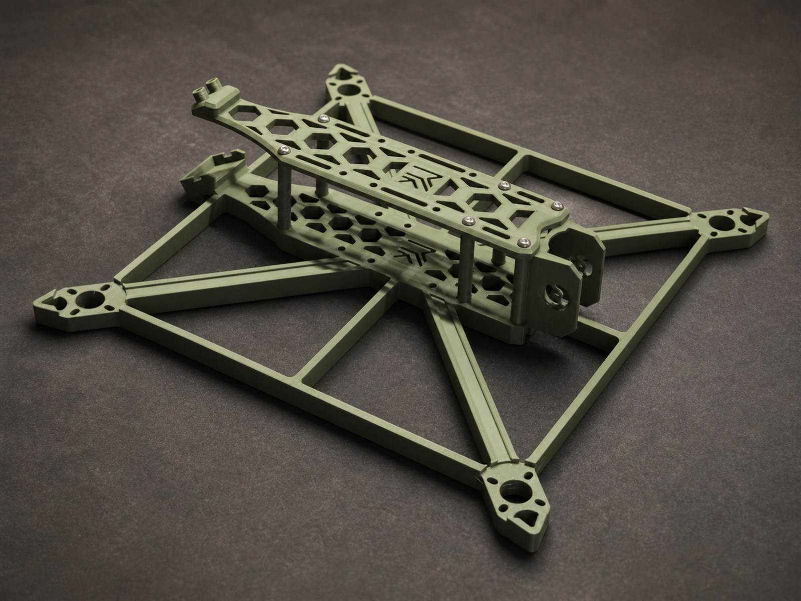
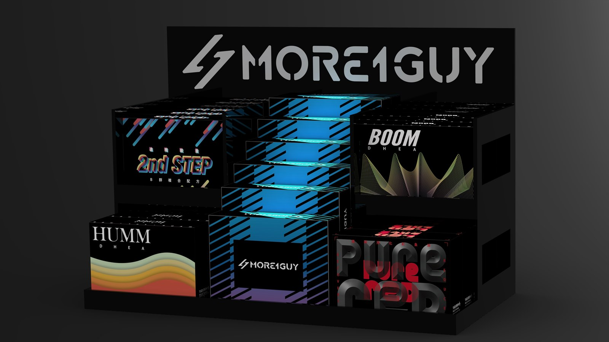

Works / 作品
先看成果，
再看我們怎麼做。
收錄能由照片、模型、實體製作或公開網站支持的案例。AI 概念視覺只補充流程，不取代真實證據。

SELECTED WORK
工業零件、實體製作與數位實作。
工業零件與結構建模 · 2025
客製無人機平台
Custom UAV Platform一次性訂製的無人機平台建模專案，依據實際組裝、安裝與製作條件整理結構。
查看案例 ↗
產品模擬與製作銜接 · 2024
商業展示貨架
Retail Display System為保健食品包裝與展示需求建立模擬模型，並將展示貨架設計銜接至壓克力廠商製作。
查看案例 ↗
機構零件與實車驗證 · 2025
MT-15 行車紀錄器置中支架
MT-15 Camera Mount為 Yamaha MT-15 設計的行車紀錄器鏡頭支架，解決鏡頭安裝位置與視覺置中的問題。
查看案例 ↗網站、工具與內容實作 · 2026
AI 實作與數位創作
AI Practice & Digital CreationAI 不只用來產生圖片，也用於網站、互動工具、軟體開發、內容整理與工作流程實驗。
查看案例 ↗